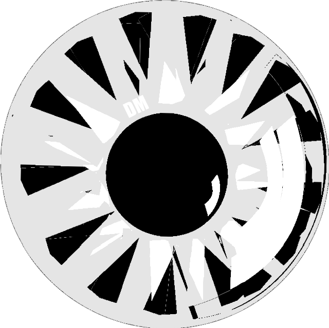
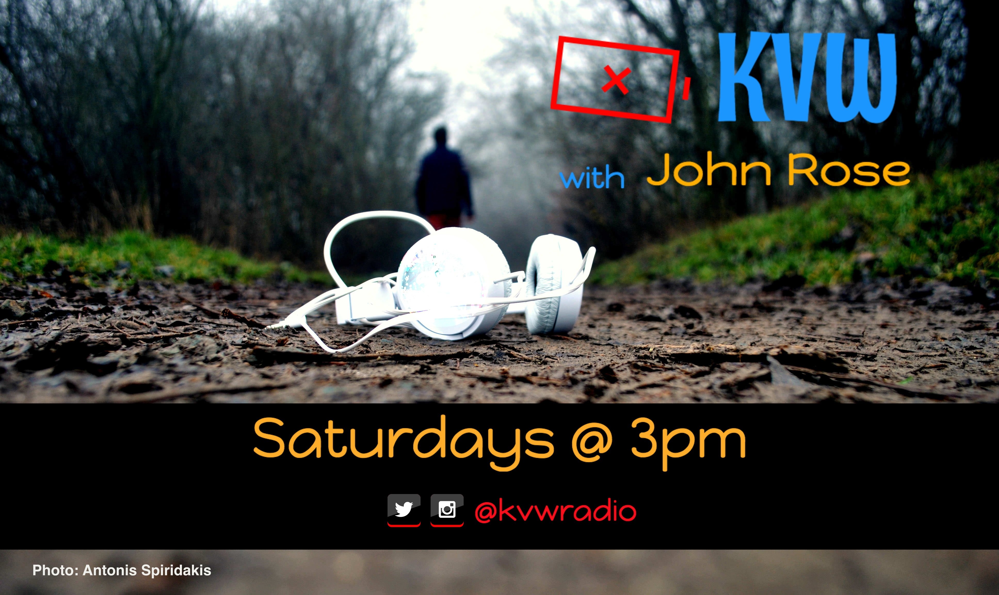

| KVW
New Epiosde Saturdays @ 3pm!

Episode 3 Songs
Episode 2 Songs
- Joshua Stevens - I’m Not Cute Like Jennifer Lawrence
- Done. - Covet
- Meteor Moves - Can’t Tell If I Coughed Up Blood Or Salsa
- Gregory McKillpop - Early Morning Voice
- The You Suck Flying Circus - Learn To Swim
- Marriah Rodgers - Things We Got To Keep
- Sam Rockwell Machete Champion - Perfectly White Teeth
- Backtalk - Appleshine Moonpie
About the show
KVW is an indie radio podcast, established to support artists while providing listeners with updates and info on releases, projects, tours and more. Catch new episodes Saturdays at 3pm!